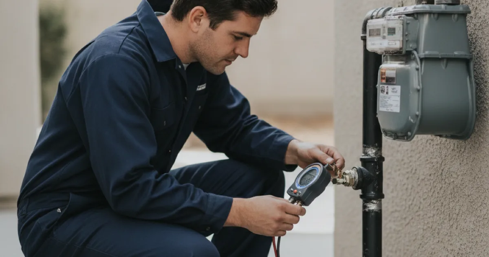

Gas Line Repair in Westchester County, NY
Gas line problems are not something to wait on. Dan's Drains provides licensed gas line repair and leak response for Westchester County homes, done safely and to code.
- Licensed & Insured
- Same-Day Service Available
- Upfront Pricing
- 15+ Years Local Experience

Smell gas? Leave the house and call your utility first — then call us for the repair.
Signs of a Gas Line Problem
Some gas issues are obvious, others subtle. Watch and listen for:
- A rotten-egg or sulfur smell near a line or appliance.
- A hissing sound close to a gas connection.
- An appliance that will not stay lit or burns oddly.
- Dead vegetation near an outdoor gas line.
Treat any suspected leak as urgent.
Safety Comes First
If you smell gas, leave the house without flipping switches and call your gas utility from outside. Once the immediate danger is handled, we repair the line that caused it.
This is the repair side of our licensed gas line services, and we never rush a shortcut on gas work.
Talk to a local Westchester County plumber today.
How We Repair a Gas Line
We locate the problem, repair or replace the affected section or connection, and test the line to confirm it holds before restoring service. We check the whole run, not just the obvious fitting.
Every repair is done to code, because gas is not an area for guesswork.
Gas Piping in Older Local Homes
Homes around Armonk have often been updated over decades, leaving gas piping of mixed ages. Older connections can corrode or loosen, especially where a line meets an appliance.
The NFPA natural gas safety information explains why careful work matters, and we repair to those standards.
When to Call a Pro
Call a licensed plumber any time you suspect a gas leak or need a line repaired or moved. It is not a do-it-yourself job.
If the repair ties into a gas appliance, we can also handle the gas water heater connection.
Frequently Asked Questions
What do I do if I smell gas?
Leave the house right away without flipping switches, and call your gas utility from outside. Once the danger is handled, we repair the line that caused it.
Are you licensed for gas work?
Yes. Dan's Drains is a licensed and insured plumbing company, and we handle gas line repairs safely and to code.
How do you find a gas leak?
We inspect connections and test the line using proper methods to locate the leak, then confirm the repair holds before restoring service.
Can you repair a line to a specific appliance?
Yes. Whether it is a water heater, range, or dryer, we repair or replace the connection safely.
Is a faint gas smell ever normal?
A brief odor when a burner lights can be normal; a lingering or strong smell is not. When in doubt, treat it as a leak and get it checked.
Ready to book? Reach Dan’s Drains for fast, upfront plumbing help.